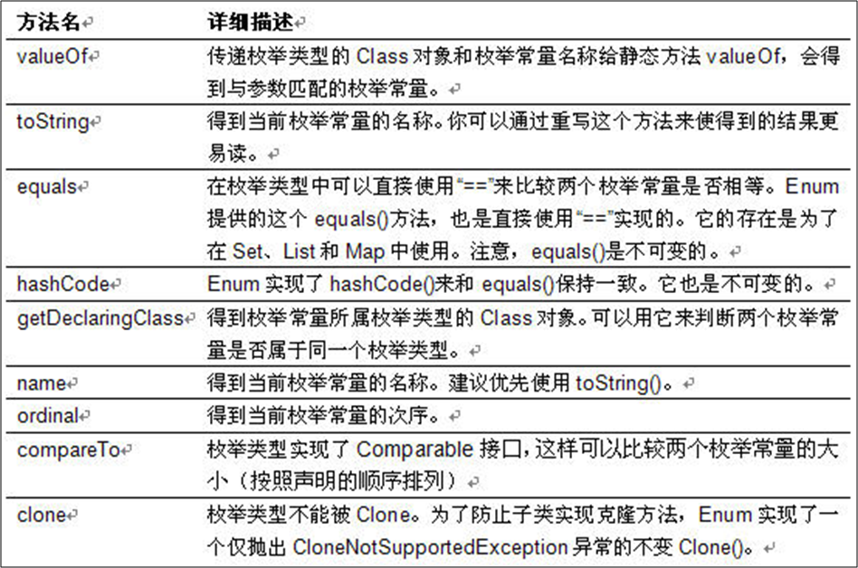
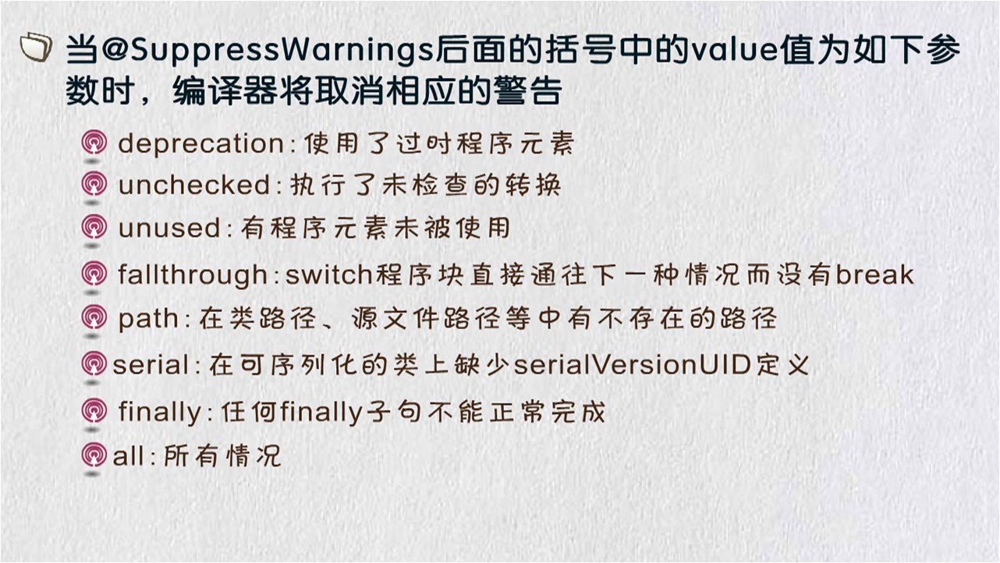

day19_枚举笔记
一、回顾
1.反射
java运行的过程中，动态的获取对象的信息，动态功能称为反射
2.作用
a.反射可以用来创建对象;(替代new)
b.通过字符串格式的路径，获取该类的所有信息;
3.获取Class对象的方式
a.类名.class 属性
b.对象名.getClass()方法
c.Class.forName("全路径");
clazz.newInstance():默认调用无参构造
4.反射构造方法
clazz.getConstructor(Class ... class):指定类型的公共的构造
clazz.getConstructors():获取所有公共的构造
clazz.getDeclaredConstructor(Class ... class):指定类型的构造，包括私有
clazz.getDeclaredConstructors():获取所有的构造方法(私有)
Constructor构造器对象:
constructor.newInstance(Object... obj):调用当前构造
setAccessible(true):设置访问私有 (field和method的私有方法也需要使用该方法)
5.反射字段
clazz.getField(String fieldName):指定的本类，父类中公共的字段
clazz.getFields():获取所有本类，父类中公共的字段
clazz.getDeclaredField(String fileName);指定的本类的字段（包括私有）
clazz.getDeclaredFields():获取本类的字段（包括私有）
Field字段对象:
field.get(Object obj); obj表示的是object当前类的对象
field.set(Object obj,Object value); 设置字段的值
6.反射方法
clazz.getMethod(String methodName,Class ... class):指定的本类，父类中公共的方法
clazz.getMethods():获取所有本类，父类中公共的方法
clazz.getDeclaredMethod(String methodName,Class ... class);指定的本类的方法（包括私有）
clazz.getDeclaredMethods():获取本类的方法（包括私有）
Method方法对象:
invoke(Object obj,Object ... agrs); //普通方法
//static修饰的方法 不是需要对象 invoke(null,Object ... agrs);
二、枚举
1.概念
常量的集合;
2.定义关键字
JDK 1.5 新增的 【enum】 关键字用于定义枚举类
3.枚举类和普通类的区别
-使用 enum 定义的枚举类默认继承了 java.lang.Enum 类
-枚举类的构造器只能使用 private 访问控制符
-枚举类的所有实例(对象)必须在枚举类中显式列出(, 分隔 ; 结尾).
-列出的实例系统会自动添加 public static final 修饰
-所有的枚举类都提供了一个 values 方法, 该方法可以很方便地遍历所有的枚举值
JDK 1.5 中可以在 switch 表达式中使用枚举类的对象作为表达式, case 子句可以直接使用枚举值的名字, 无需添加枚举类作为限定
4.枚举类的属性
枚举类对象的属性不应允许被改动, 所以应该使用 private final 修饰
枚举类使用 private final 修饰的属性应该在构造器中为其赋值
若枚举类显式的定义了带参数的构造器, 则在列出枚举值时也必须对应的传入参数
5.枚举类的方法

三、注解
1.概述
从 JDK 5.0 开始, Java 增加了对元数据(MetaData) 的支持, 也就是 @Annotation(注解)
Annotation 其实就是代码里的特殊标记, 这些标记可以在编译, 类加载, 运行时被读取, 并执行相应的处理. 通过使用 Annotation, 程序员可以在不改变原有逻辑的情况下, 在源文件中嵌入一些补充信息.
Annotation 可以像修饰符一样被使用, 可用于修饰包,类, 构造器, 方法, 成员变量, 参数, 局部变量的声明, 这些信息被保存在 Annotation 的 “name=value” 对中.
Annotation 能被用来为程序元素(类, 方法, 成员变量等) 设置元数据
2.注解的分类
a.基本注解
jdk默认有的注解
b.元注解
用来修饰自定义注解中的注解(修饰注解)
jdk已经创建好的，可以直接使用;
c.自定义注解
自己根据需求创建的注解;
关键字: @interface
d.第三方注解 @Test测试 spring,mybaties,servlet....注解
必须要入第三方的依赖包 jar包
3.1 基本注解
1.常用的注解
@Override: 限定重写父类方法, 该注释只能用于方法
@Deprecated: 用于表示某个程序元素(类, 方法等)已过时
@SuppressWarnings: 抑制编译器警告.
分为多个类型

3.2 元注解
1.概念
JDK 的元 Annotation 用于修饰其他 Annotation 定义
2.分类
@Retention:保留的时间(源码，运行时(常用),编译后)【重要】
@Target:指定注解可用于那些元素上面【重要】
@Docmented:生成文档 javadoc
@Inherited:是否可以被继承
2.1 @Retention:保留的时间
分为三种情况
RetentionPolicy.SOURCE; //在.java源文件中保留
RetentionPolicy.RUNTIME //在运行时候保留(可以通过反射获取)
RetentionPolicy.CLASS// 在.class文件中保留
2.2 @Target使用的范围(类，接口，包，构造器，字段，方法....)
ElementType.TYPE :类，接口，枚举
ElementType.FIELD:成员变量
ElementType.METHOD:方法
ElementType.PARAMETER:参数
ElementType.CONSTRUCTOR:构造器
ElementType.LOCAL_VARIABLE:局部变量
ElementType.ANNOTATION_TYPE:注解
ElementType.PACKAGE:包
ElementType.TYPE_PARAMETER:参数
ElementType.TYPE_USE:用户
2.3 @Documented:
用于指定被该元 Annotation 修饰的 Annotation 类将被 javadoc 工具提取成文档.
2.4@Inherited:
被它修饰的 Annotation 将.如果某个类使用了被 @Inherited 修饰的 Annotation具有继承性, 则其子类将自动具有该注解
3.3 自定义注解
1.注解的关键字
@interface
2.概述
Annotation 的成员变量在 Annotation 定义中以无参数方法的形式来声明. 其方法名和返回值定义了该成员的 名字和类型.
可以在定义 Annotation 的成员变量时为其指定初始值, 指定成员变量的初始值可使用 default 关键字
没有成员定义的 Annotation 称为标记; 包含成员变量的 Annotation 称为元数据 Annotation
3.4 提取 Annotation 信息
1.概述
JDK 5.0 在 java.lang.reflect 包下新增了 AnnotatedElement 接口, 该接口代表程序中可以接受注解的程 序元素
当一个 Annotation 类型被定义为运行时 Annotation 后, 该注释才是运行时可见, 当 class 文件被载入时保 存在 class 文件中的 Annotation 才会被虚拟机读取
程序可以调用 AnnotationElement 对象的如下方法来访问 Annotation 信息
四、Junit单元测试
1.步骤
a.第一步 需要导入Junit对应的jar包
b.第二部 使用注解@Test
2.@Test使用
a.只能在方法的上面使用
b.该方法不能有返回值，不能有参数列表;
{kind=link}
{kind=link}